Коръән әлифбасын укыту методикасы
Җиденче дәрес · Ләм
«Коръән әлифбасы»ның 24–28 нче битләрен ачабыз. Бу — укытучы өчен дәресне үткәрү тәртибе.
«Коръән әлифбасы», 24–28 нче битләр.
1 НЧЕ АДЫМ · 24 НЧЕ БИТ
Ләмнең мәхраҗын күрсәтәбез
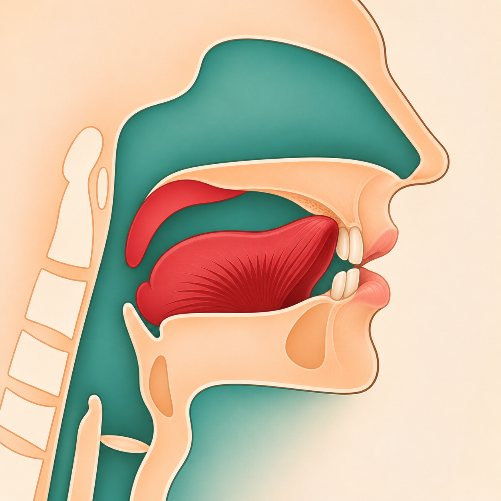
Телнең алгы ян кырые (очына кадәр) — «أدنى حافة اللسان» («адна хафати-ль-лисан») — өске алгы тешләр артындагы казнага җиңелчә тия. Иреннәр иркен, һава телнең ян ягыннан чыга.
Башта рәсемдә тию урынын күрсәтәбез. Аннары авазны үзебез әйтәбез; укучы тыңлый һәм кабатлый. Ләмне артык каты кыстырмыйбыз; «Аллаһ» сүзендәге аерым укылышны икенче китапта өйрәнәчәкбез.
2 нче адым · сыйфатлар
Ләм хәрефенең сыйфатлары
لЛәмЗәлкыя
Әл-ҖәһрЯңгыравыклылык
Әл-БәйнияУрталык
Әл-ИстифальТүбәнлек
Әл-ИнфитәхАчыклык
Әл-ИзләкҖиңеллек
ИнхирафАвазның янга борылуы
Сыйфатларны әлегә исемнәре белән генә күрсәтәбез. Аларның аңлатмасын алдагы аерым дәресләрдә өйрәнәбез.
Терминнар «Тәҗвид 1» белән чагыштырылды.
3 НЧЕ АДЫМ · 24 НЧЕ БИТ
1 нче күнегү · язабыз
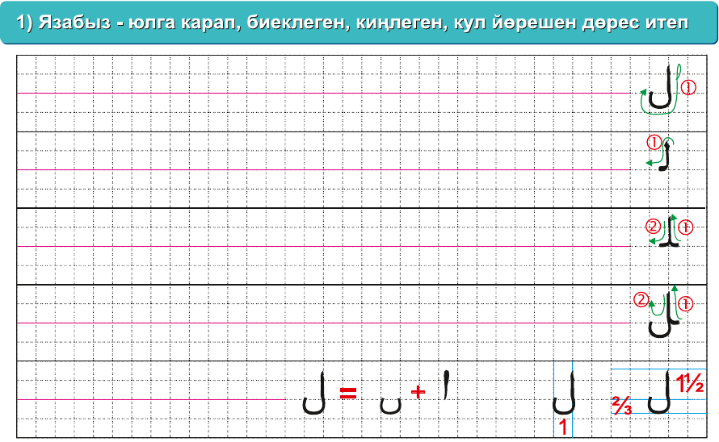
Беренче юлны бергә язабыз. Калган юлларны укучы үзе тәмамлый; без хәрефнең юнәлешен һәм юлга урнашуын тикшерәбез.
2 нче күнегү · укыйбыз
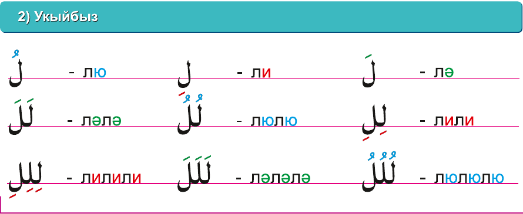
Без укыйбыз: «Ләм — фәтхә — лә»; «Ләм — кәсрә — ли»; «Ләм — даммә — лю».
Укучы укый: башта берәр, аннары икешәр һәм өчәр хәрефне кушып укый.
4 НЧЕ АДЫМ · 25 НЧЕ БИТ
3 нче күнегү · мөстәкыйль эш
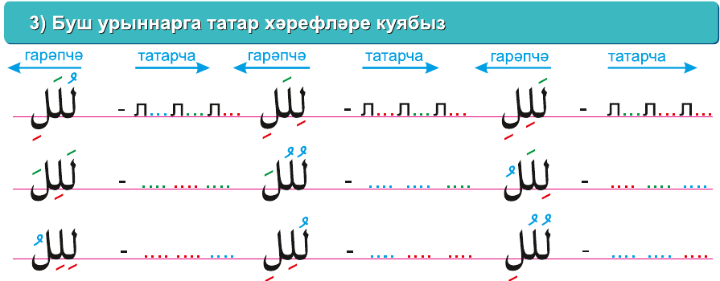
Укучы буш урыннарга татарча язылышны үзе куя. Без әзер эшне тикшерәбез.
Яңа язу рәвеше · Ләм + Әлиф
ل + اИке хәреф
لاЛигатура
Ләм белән Әлиф бергә килгәндә, алар махсус бәйләнеш — лигатура рәвешендә языла. Бу яңа хәреф түгел: уңда Ләм, сулда Әлиф.
Башта ике хәрефне аерым күрсәтәбез, аннары китаптагы «لا» рәвешен табабыз. Укучы аларны уңнан сулга танып укый.
Хәмзәле Әлиф белән килгән төрләрен дә китаптагы әзер мисаллардан күрсәтәбез; аларны гади «لا» белән бутамыйбыз.
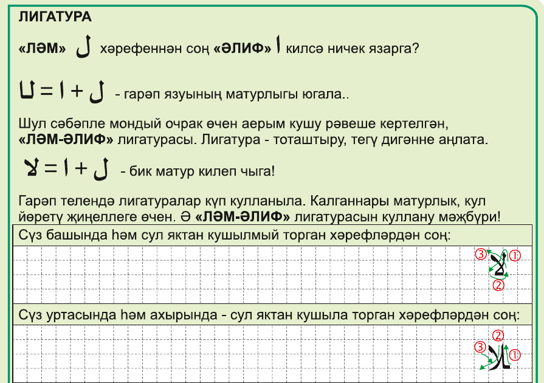
5 НЧЕ АДЫМ · 26 НЧЕ БИТ
4 нче күнегү · мәдд табигый
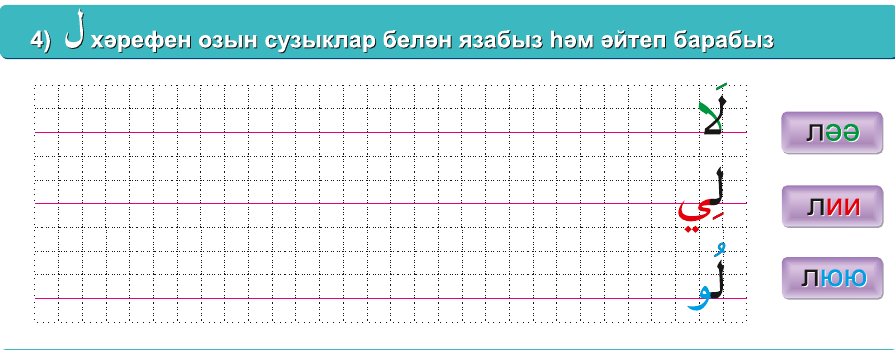
1 · ләәЛәм + фәтхә + Әлиф
→ ләә · 2 хәрәкә
→ ләә · 2 хәрәкә
2 · лииЛәм + кәсрә + Йә
→ лии · 2 хәрәкә
→ лии · 2 хәрәкә
3 · лююЛәм + даммә + Вау
→ люю · 2 хәрәкә
→ люю · 2 хәрәкә
✦ Өч мисалның һәркайсында Мәдд табигыйны күрсәтәбез һәм 2 хәрәкәгә сузып укытабыз.
5 нче күнегү · тәнвин
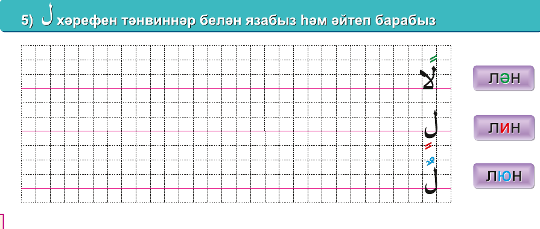
لًاЛәм — фәтхәтейн → лән
لٍЛәм — кәсрәтейн → лин
لٌЛәм — даммәтейн → люн
«Н» авазы кайдан килә?
Аерым Нун хәрефе язылмый. Икенче хәрәкә ахырга «н» авазын өсти: لِ → ли, ә لٍ → лин.
6 НЧЕ АДЫМ · 27 НЧЕ БИТ
6 нчы күнегү · сәкен белән укыйбыз
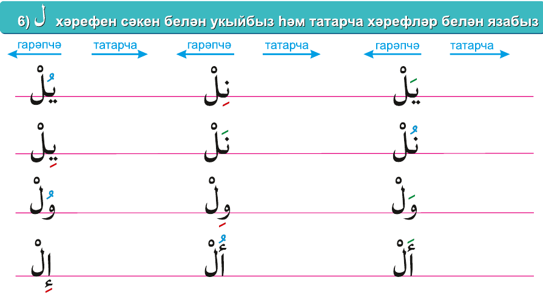
Йә — фәтхә — Ләм — сәкен → йәль
Нун — кәсрә — Ләм — сәкен → ниль
Нун — даммә — Ләм — сәкен → нуль
7 НЧЕ АДЫМ · 27 НЧЕ БИТ
7 нче күнегү · тикшерәбез
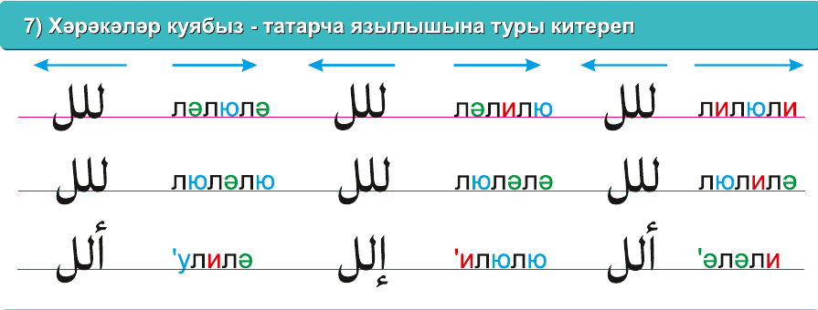
Укучы хәрәкәләрне үзе куя. Без әзер җавапларны, аеруча Ләмнең тоташуын тикшерәбез.
8 нче күнегү · тикшерәбез
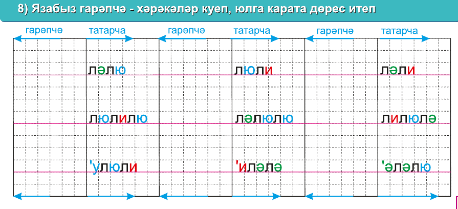
Укучы сүзләрне гарәпчә үзе яза. Без хәрефләрнең тоташуын, хәрәкәләрне һәм Ләм–Әлиф лигатурасын тикшерәбез.
8 НЧЕ АДЫМ · 28 НЧЕ БИТ
9 нчы күнегү · сүзләрне укыйбыз
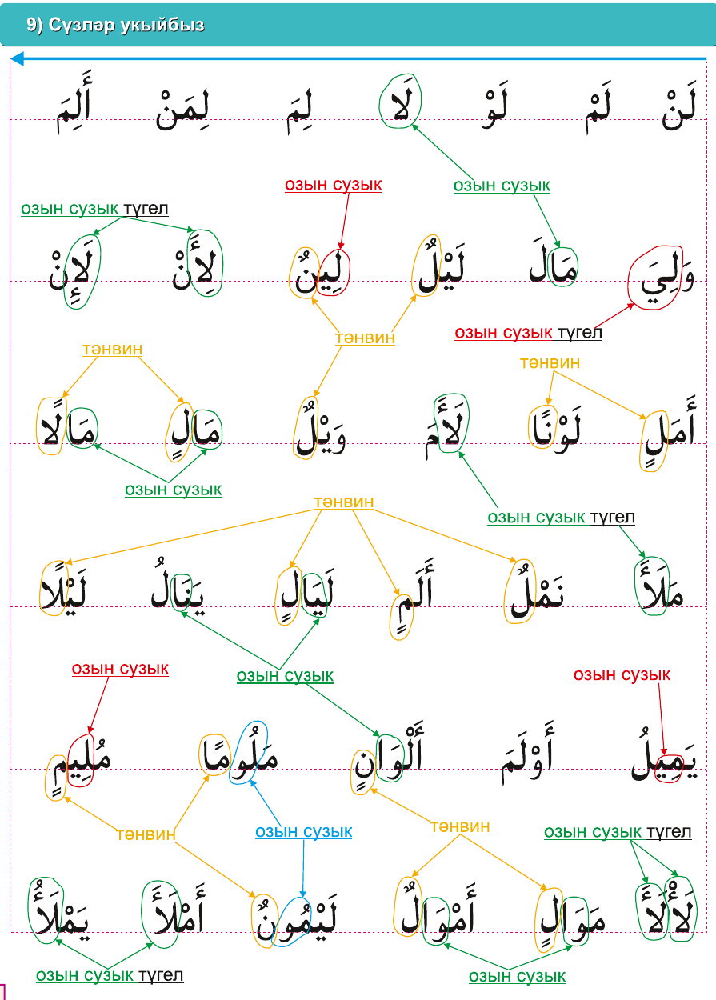
Беренче юлдагы кыска сүзләрне укучы үзе укый. Аннары икенче юлдагы дүрт сүзне уңнан сулга бергәләп укыйбыз.
1.
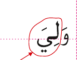
Вау — фәтхә → вәЛәм — кәсрә → ливә-лиЙә — фәтхә → йә
Йә хәрәкәле, шуңа күрә монда озын сузык түгел.вә-ли-йә«3 тапкыр»2.
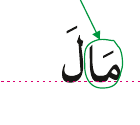
Мим — фәтхә — Әлиф → мәә (Мәдд табигый)Ләм — фәтхә → лә
мәә-лә«3 тапкыр»3.
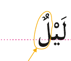
Ләм — фәтхә — Йә — сәкен → ләй (Лин)Ләм — даммәтейн → люн
ләй-люн«3 тапкыр»4.
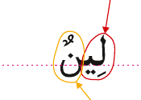
Ләм — кәсрә — Йә → лии (Мәдд табигый)Нун — даммәтейн → нун
лии-нун«3 тапкыр»Калган сүзләрне дә шул ук тәртиптә укыйбыз: хәрефне һәм хәрәкәне атыйбыз, авазларны кушабыз.
«Коръән әлифбасы», 24–28 нче битләр.